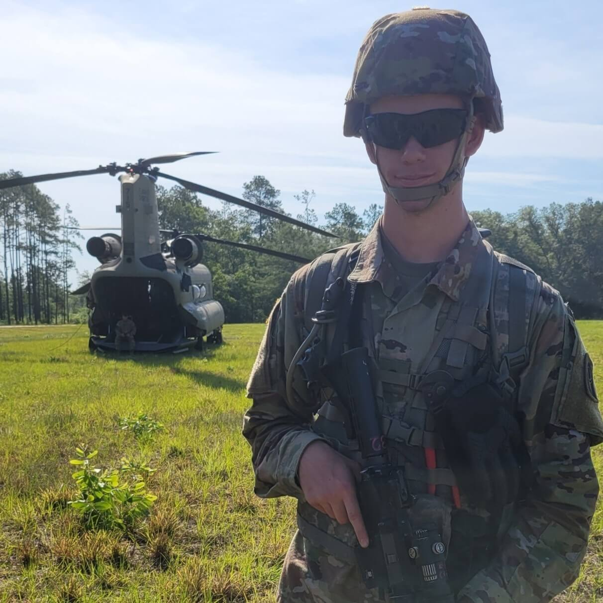
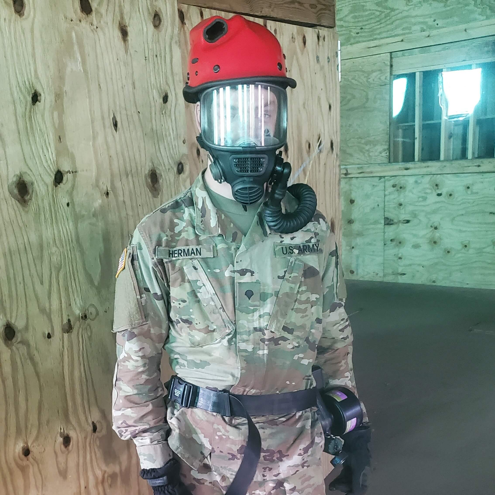
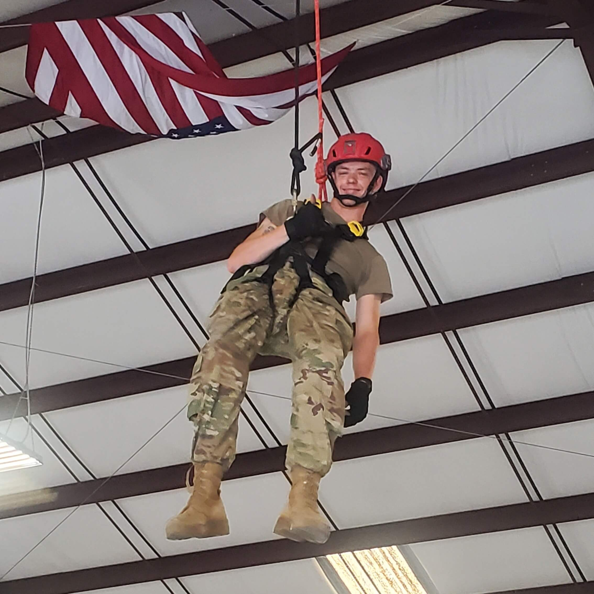
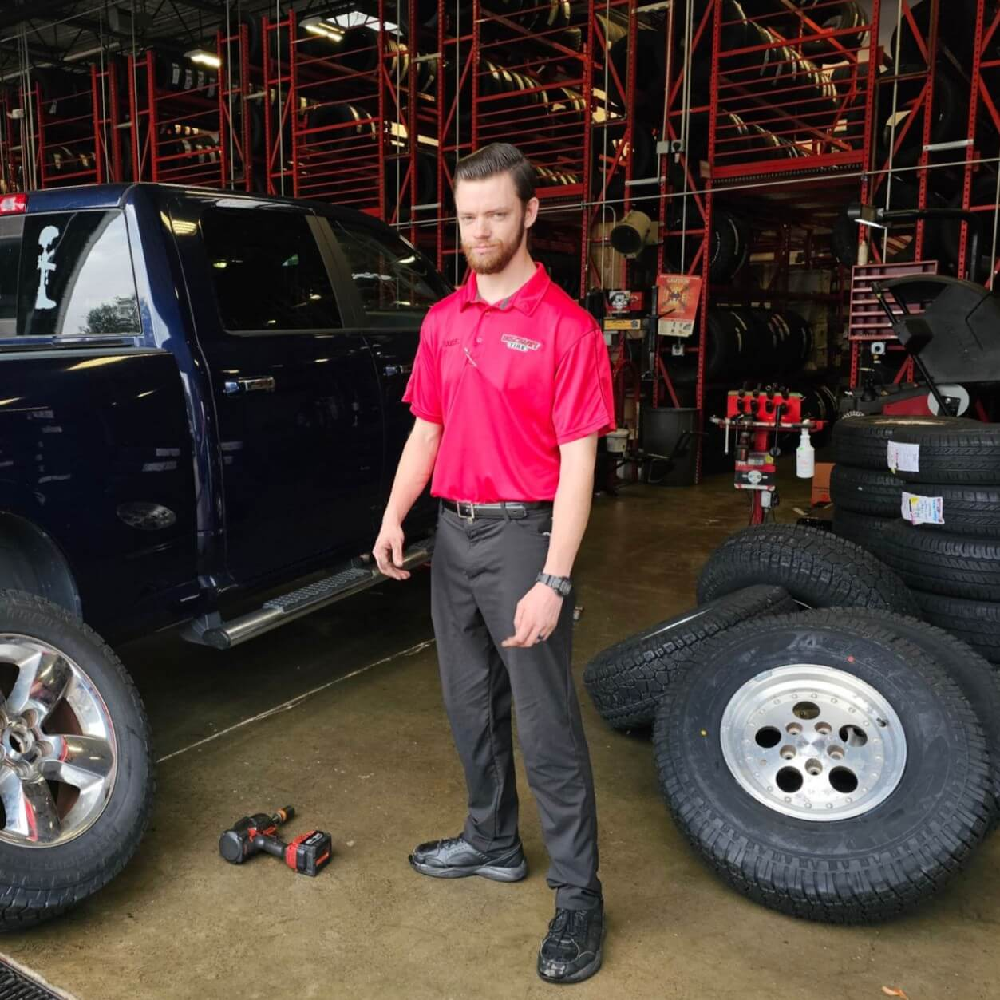
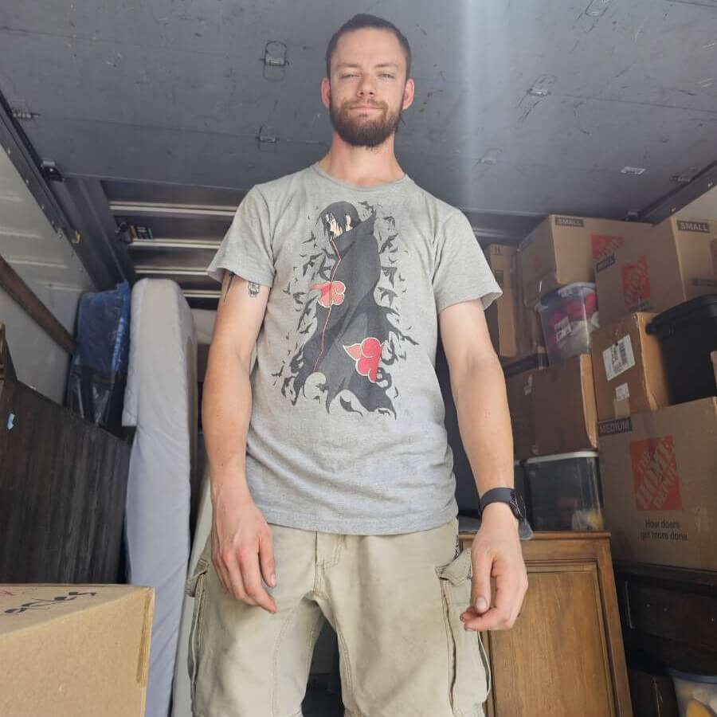
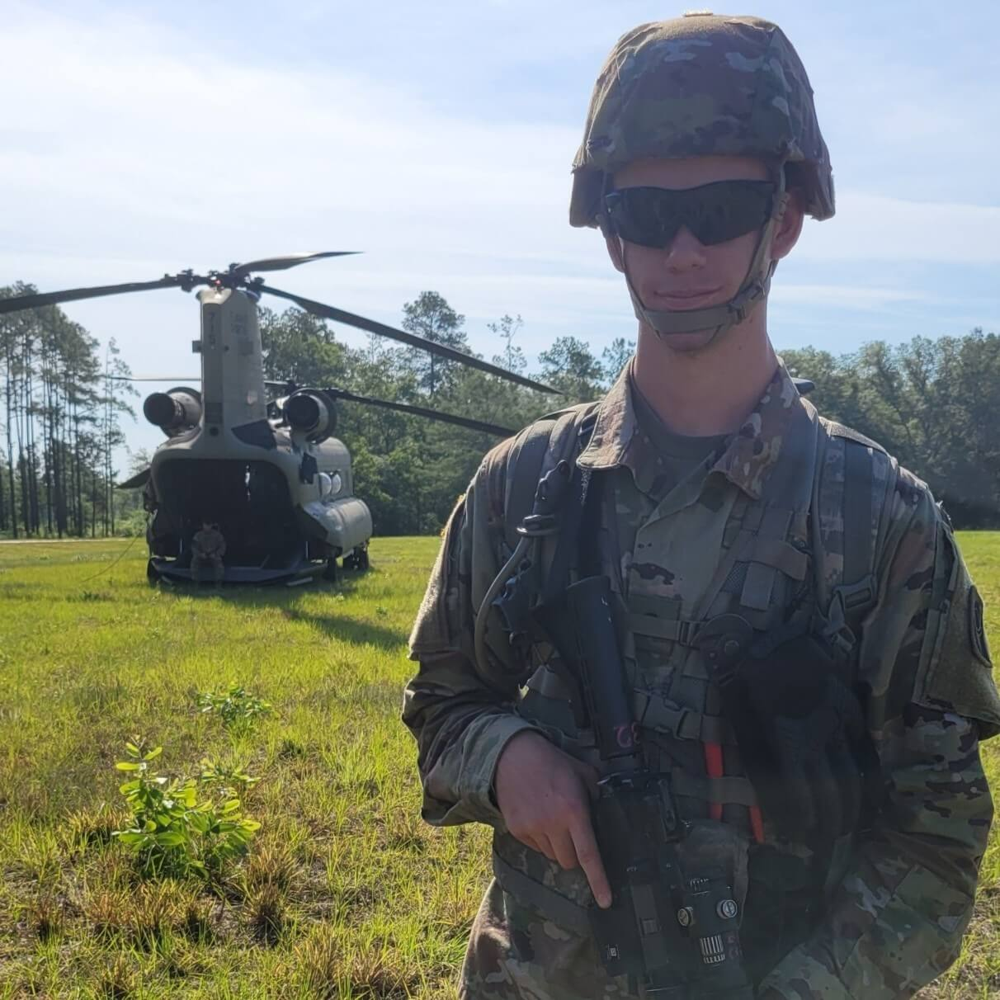
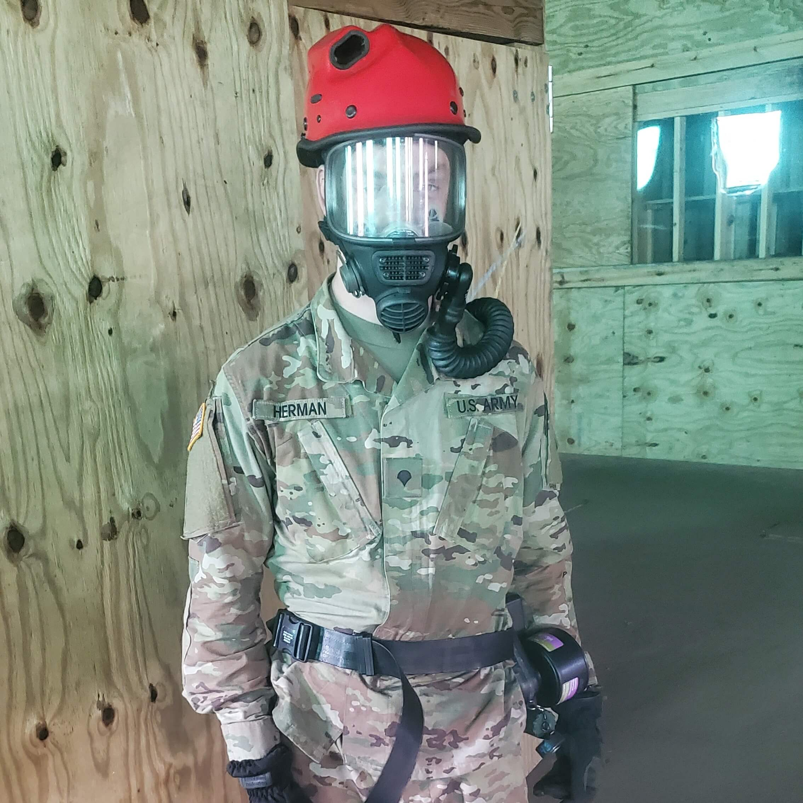
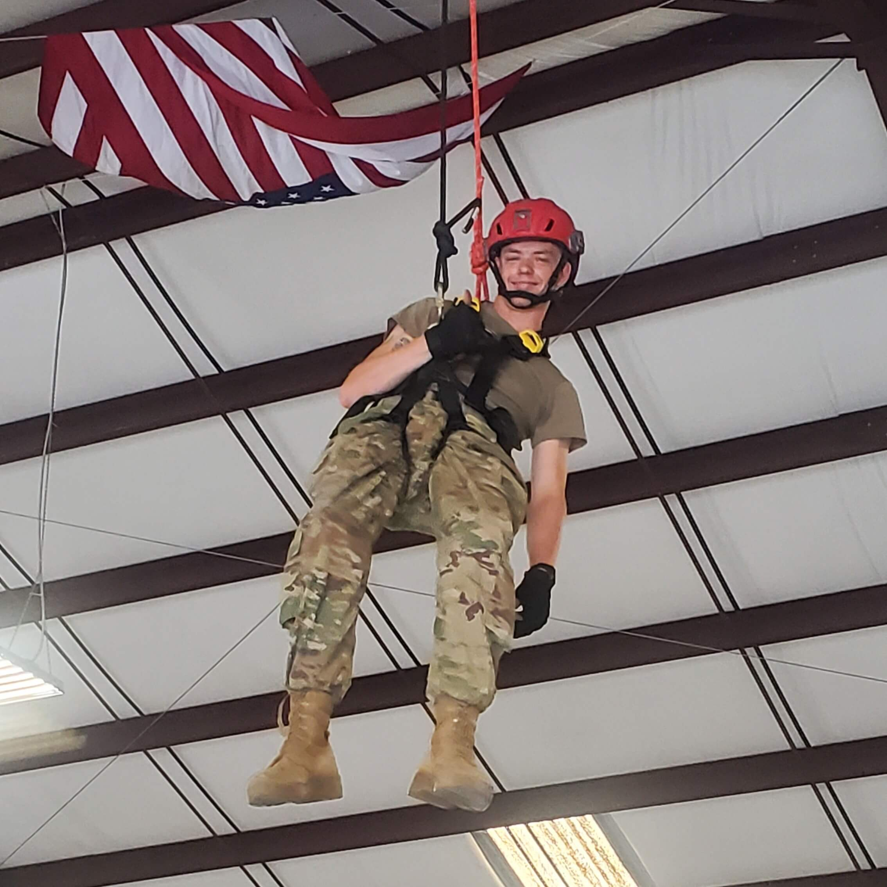
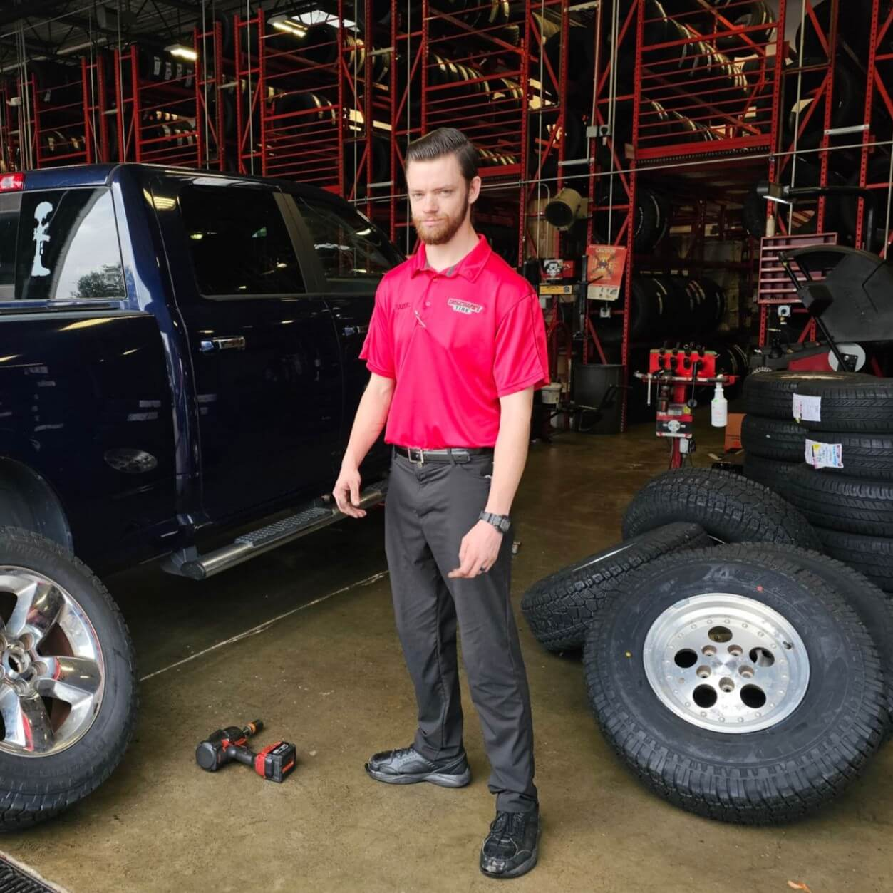
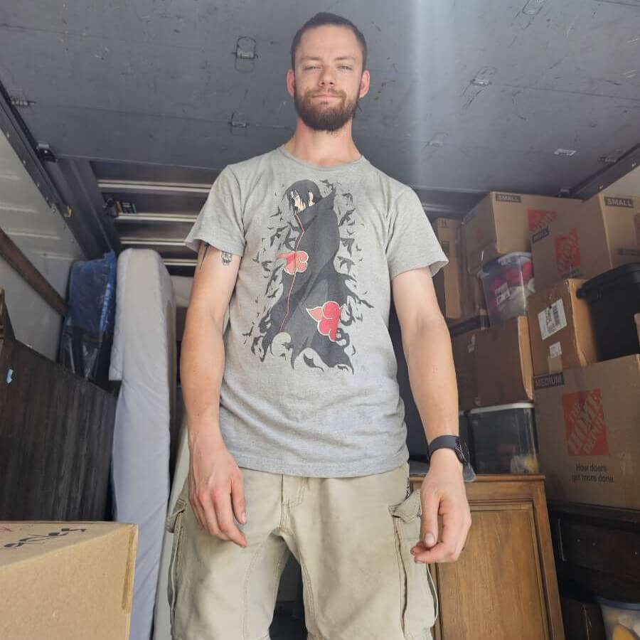

About Me:
A graduate of FSCJ with an Associate of Science in Computer
Information Technology, I am actively seeking to launch my career
in the IT industry. I've built a solid technical base, with
experience in HTML, CSS, JavaScript, PHP, and SQL. A highlight
of my practical experience was an internship at FSCJ, where I
gained hands-on networking expertise by establishing a private
network for a classroom. In future semesters, that network will be
used as a learning tool for networking classses. This has
equipped me with strong foundational skills with working in
this field and gave me a better understanding of the complexities
of a real-world challenge.
While my passion lies in web development, I'm eager to apply my
technical abilities in any IT role that challenges me and fosters
growth. My time in the Army National Guard instilled in me
invaluable discipline, teamwork, problem-solving skills and a
resilient work ethic. My professional journey also includes
valuable experience as an Assistant Manager at Discount Tire,
where I further honed my leadership, problem-solving, and
customer service skills. I am pleased to provide several
references from past employers who can attest to my
capabilities.
Beyond my professional pursuits, I find enjoyment in active
hobbies like hiking, motorbiking, and participating in Spartan
races, which speak to my resilience and determination. I also
appreciate the creative and strategic aspects of video and board
games, and love exploring new places through travel, especially
after an unforgettable honeymoon in Japan. These interests,
alongside a strong dedication to my family and friends, define
who I am.
 








